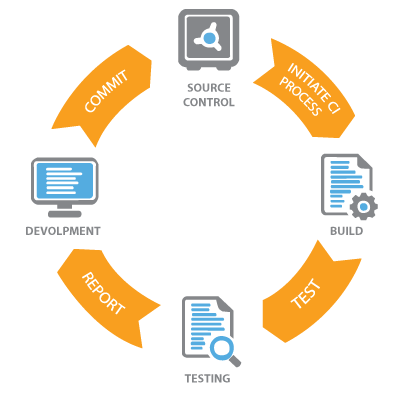

<!DOCTYPE html>  
<html>
	
	<head>
        
        <title>CI Example</title>
        <link rel="stylesheet" type="text/css" href="style.css">
		
		<script type="text/JavaScript">
		
		
		</script>
	
	</head>

</html>
    
    <body>
        
        <h1>Continious Integration</h1>
        
        <ul>
			<li>
			<a href="https://guides.github.com/activities/hello-world/">Source Control</a>
			</li>
			<li>
			<a href="http://www.vogella.com/tutorials/Jenkins/article.html" class="nav-btn">Continious Integration with Jenkins</a>
			</li>
			<li>
			<a href="https://crossbrowsertesting.com/blog/continuous-integration/continuous-integration-testing-delivery/" class="nav-btn">Continious Integration Testing</a>
			</li>
        </ul>
    
          
        
        <h2>Continious Integration Definition</h2>
        
        <p>
            <b>Continuous integration (CI)</b> is a software development practice of regularly integrating your code changes into a shared code repository. Typically, this would happen at least once or even several times a day (depending on the number of code commits) and this practice encourages committing small changes more often over committing large changes infrequently. Each commit triggers a build during which tests are run that help to identify if anything was broken by the changes.</p>
       
    </body>

</html>
